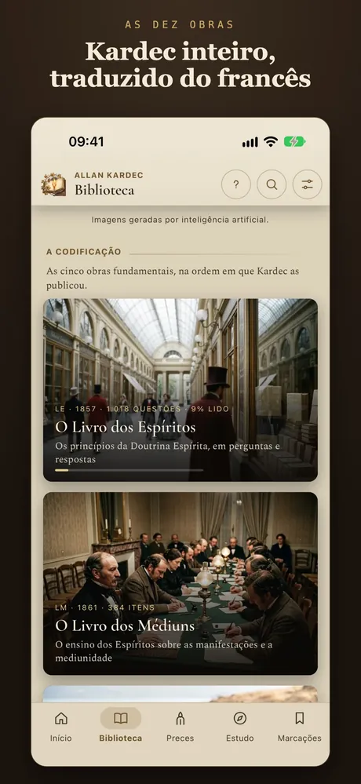
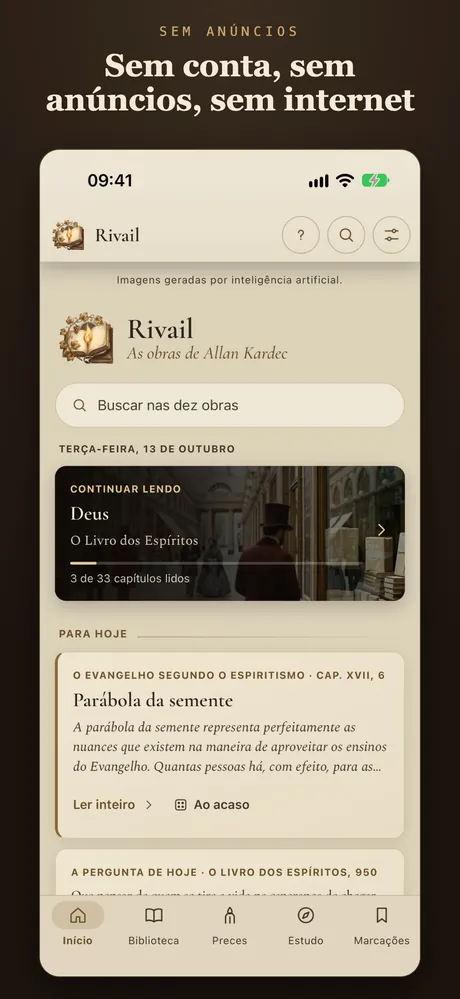
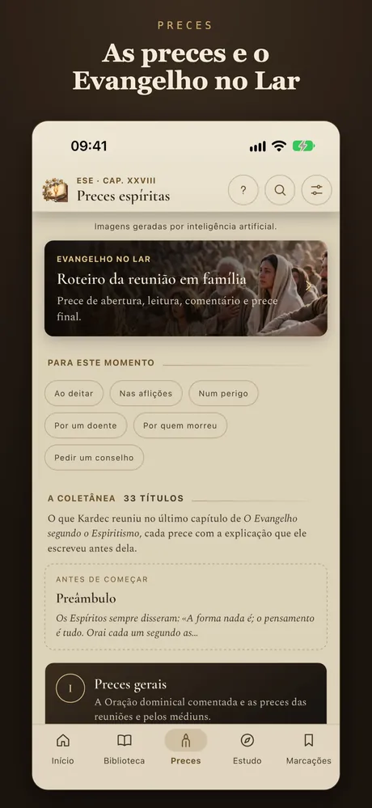
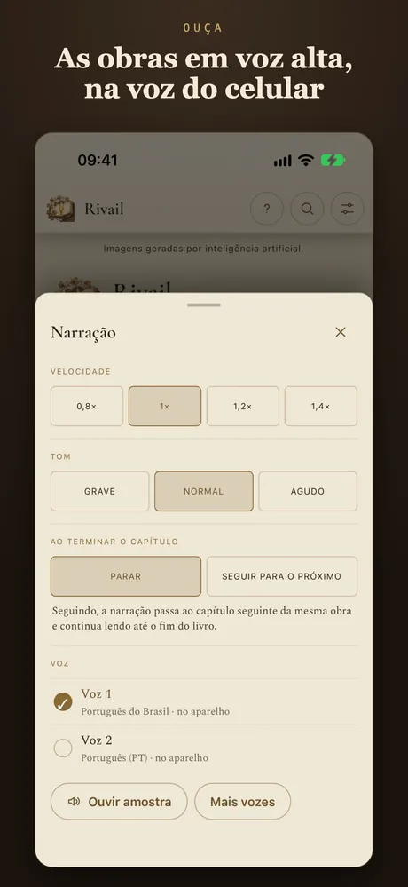
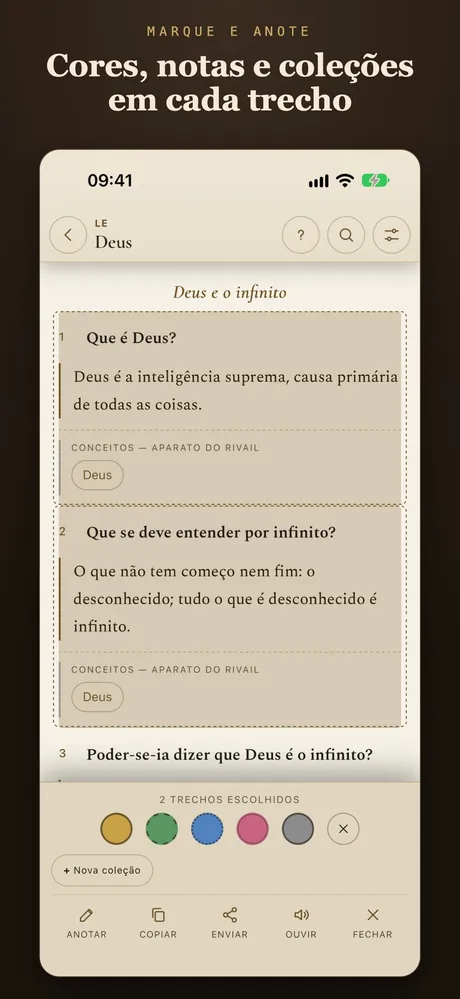
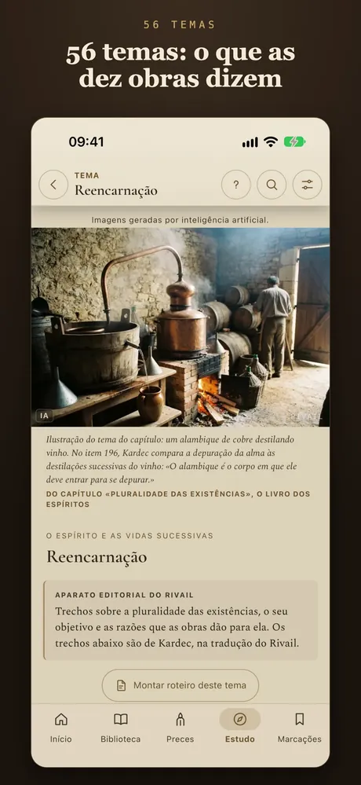
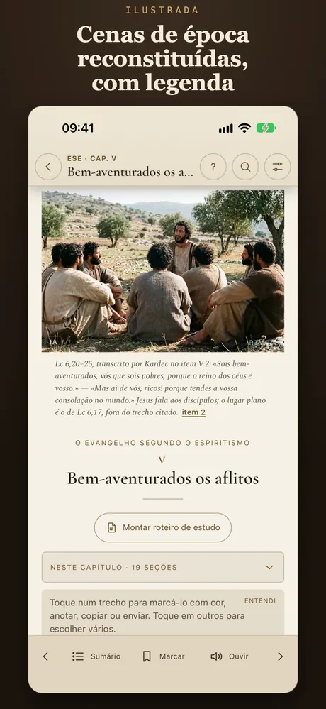
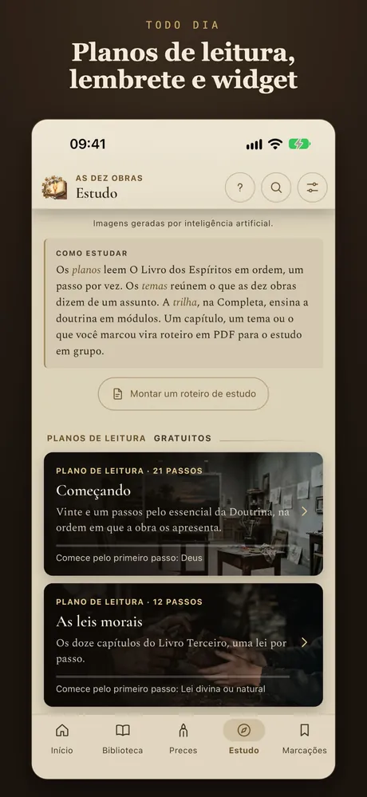

A biblioteca
Os dez livros de Kardec, inteiros.
O Livro dos Espíritos com as 1.018 perguntas da 2ª edição, O Evangelho segundo o Espiritismo, O Livro dos Médiuns, O Céu e o Inferno, A Gênese e mais cinco obras — completos, sem assinatura.

Os livros de Kardec para ler, ouvir, orar e estudar — fiéis ao que ele publicou.
A biblioteca
O Livro dos Espíritos com as 1.018 perguntas da 2ª edição, O Evangelho segundo o Espiritismo, O Livro dos Médiuns, O Céu e o Inferno, A Gênese e mais cinco obras — completos, sem assinatura.
A tradução
Nenhuma linha vem de outra tradução. O texto foi traduzido das edições que Kardec publicou e conferido contra os fac-símiles de época. Quando quiser, o original francês aparece sob cada item.

Notas desta edição
As notas explicam o termo de época e mostram o que a edição original traz, para você ler Kardec como ele escreveu.

Ilustrada
Mais de 150 cenas reconstituídas, uma por capítulo, cada qual com a legenda que diz de onde vem o que ela mostra. E as capas documentadas de cada obra.

Preces
As preces de O Evangelho segundo o Espiritismo, organizadas por momento: ao deitar, nas aflições, por um doente, por quem morreu, para pedir um conselho.

Evangelho no Lar
O roteiro do Evangelho no Lar: prece de abertura, leitura, comentário e prece final. Uma reunião curta, com a família, no mesmo dia e hora da semana.

Estudo da Doutrina
Deus, reencarnação, mediunidade, livre-arbítrio, a vida futura, a caridade. Três planos de leitura de O Livro dos Espíritos e a busca nas dez obras ao mesmo tempo.

Para o dia a dia
Trecho e pergunta do dia, lembrete e widget, cartão para compartilhar com a fonte citada, tamanho de letra e ajuste de cor para daltonismo. E O Livro dos Espíritos e o Evangelho em áudio, sem internet.

No iPad
No iPad, a leitura ganha margens largas e a página se lê como um livro. Em português do Brasil e de Portugal, espanhol, inglês e o original francês.

Os livros estão completos no aplicativo, sem assinatura e sem propaganda. Os planos pagos são de compra única e acrescentam o estudo aprofundado e as ilustrações — nunca o texto.
As telas do aplicativo, como aparecem na App Store.








A Ilustrada traz as capas documentadas e mais de 150 cenas de época reconstituídas, uma por capítulo, cada qual com a legenda que diz de onde vem o que ela mostra. A Completa acrescenta os 56 temas inteiros, a trilha de estudo em módulos e os roteiros em PDF. Quem tem a Ilustrada paga só a diferença.
Em português do Brasil, português de Portugal, espanhol, inglês e o original francês. O Rivail é um projeto independente, sem vínculo com federações ou editoras.
Nenhum cadastro e nenhuma publicidade. As suas marcações e notas ficam no seu aparelho.
Sim. Os dez livros estão completos, sem assinatura e sem propaganda. Os planos pagos são de compra única e acrescentam o estudo aprofundado e as ilustrações — nunca o texto.
Do francês original. Nenhuma linha vem de outra tradução: o texto foi traduzido das edições que Allan Kardec publicou e conferido contra os fac-símiles de época.
Sim. A leitura e a narração em áudio funcionam sem internet.
Português do Brasil, português de Portugal, espanhol, inglês e o original francês: os livros, o estudo e o aplicativo inteiro.
Não. O Rivail é um projeto independente, sem vínculo com federações ou editoras.